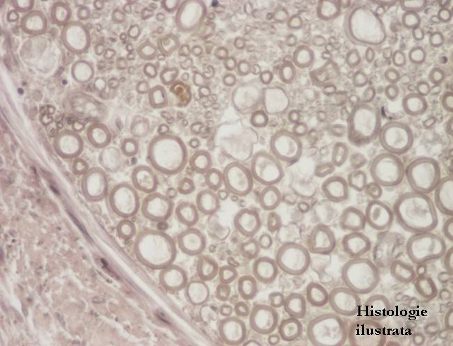
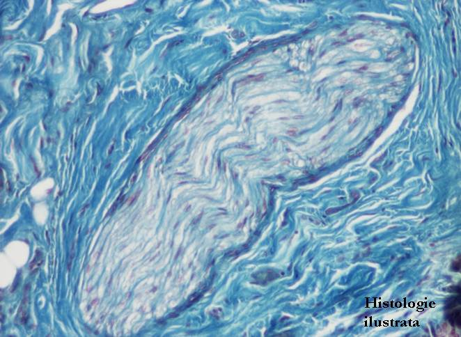
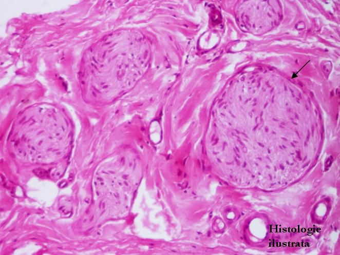
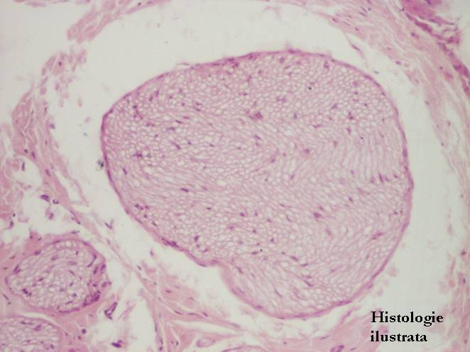
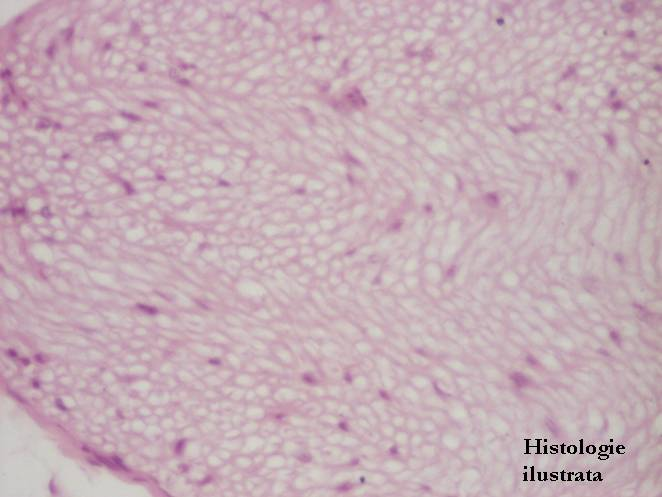

Chap.4 - Tissu nerveux
4.3. Système nerveux périphérique
Nerfs périphériques




Fig. 167 - Gaine de myéline - nerf périphérique en coupe transversale, acide osmique X 100
Fig. 168 - Gaine de myéline – nerf périphérique, acide osmique X 400
Fig. 169 - Gaine de myéline - nerf périphérique en coupe longitudinale, acide osmique X 400,
Fig. 170 - Nerf périphérique en coupe longitudinale – glande salivaire, H.E. X 100





Fig. 171 - Nerf périphérique en coupe longitudinale – lèvre, T.S. X 200
Fig. 172 - Périnèvre - nerfs périphériques en coupe longitudinale, langue, H.E. X 100
Fig. 173 - Nerfs périphériques – coupe transversale, trachée, H.E. X 100
Fig. 174 - Nerf périphérique – coupe transversale, H.E. X 200